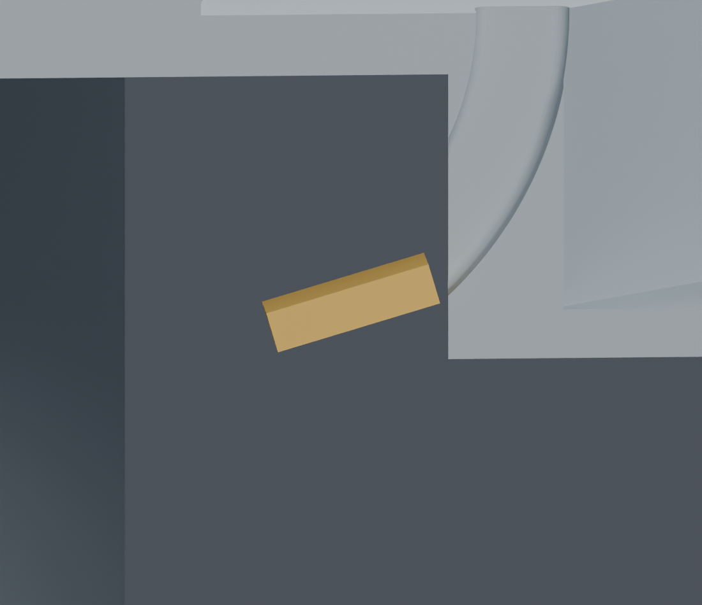
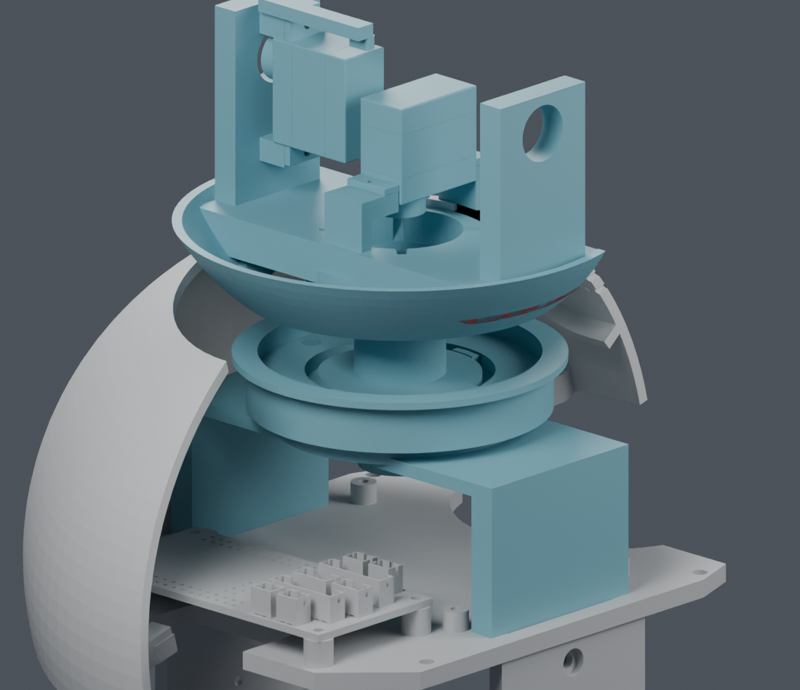

新顺序按身体上壳/承重桥、22件偏航与舵盘、14件头托与CAM分步装入，所查刚体位置通过。四根线的全长及PH插头已建入，身体段临时走位仍未通过。LCD代理姿态误报已修正；相机支架上角与前壳约0.00765mm³相交仍需处理。
查看分步顺序、完整线长与局部剖面。主模型 M1.47 未改。
较大端子 1×1.8×4.1 mm 预留已有局部可行候选：临时 R10 弯道、竖直起点上移 1 mm，仅扩大两件未采用候选的既有通道。四方向连续穿入及导线回位通过，端子/导线间隙下界约 0.308/0.306 mm；轴颈径向壁厚最小样本 1.601→1.479 mm。强度、全长供线及完整顺序仍未完成，候选未应用主模型。
剖面对比与连续检查。下方保留原路径及旧顺序的失败证据。
1×1.8×4.1 mm 端子预留体在下部 R8 弯道的首个不足位置，间隙约 0.252 mm，低于 0.3 mm 设计分配。此位置没有名义方盒穿透；也不代表真实压接端子已经确认能装。
保持打印件不变的 49 组位置与滚转角组合均未通过。结果仅对应已测组合，没有宣称所有路径都不可能。

橙色为 ASSUMED 空间预留，灰色为现有候选支架剖切。
把完整头部加入后，上壳独立倾斜动作会碰到头部支架。暂缓安装头壳也不能消除这处冲突。
| 已检查的替代动作 | 结果 |
|---|---|
| 完整头部或后装头壳，沿原上壳动作 | 两组各四段均有碰撞 |
| 头部与上壳同步抬起 | 10种限定动作均未通过 |
| 完整下部框架由下方装入 | 约3mm处基板与外壳相交 |
| 参考 PH 端子反向穿入 | 两种预留体均未通过上部入口 |

展示副本作剖切；209件来源实体全部归组，没有用隐藏检查障碍物来放行。图中红色相交体部分位于不透明零件内部。
核对分步穿线和身体端最后插接，完整放置每根余线，再统一导线长度、扎带和工具路径。如果需要改变打印结构或供应商交货时的入壳状态，先给出具体候选供确认。
JST PH 官方资料已查到系列外形和适用线材、工装。完整压接成品外形与公差仍需逐项确认，不能由系列图自动补全。